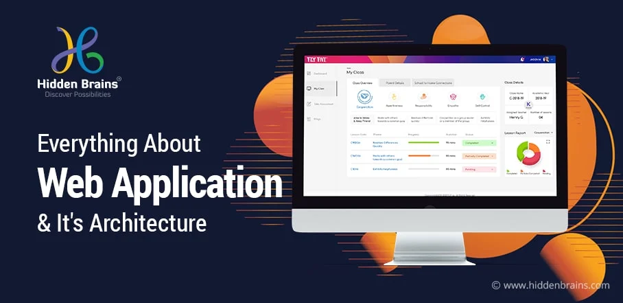
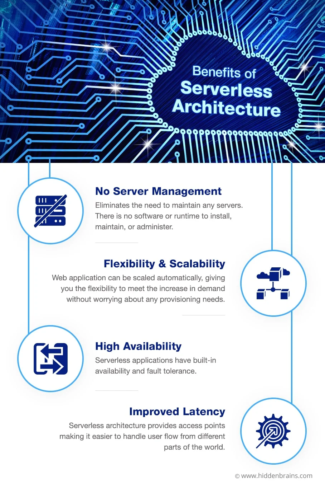
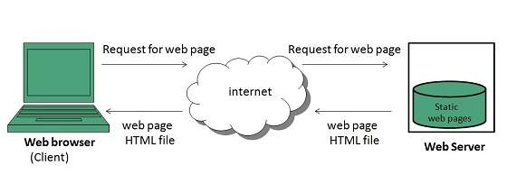
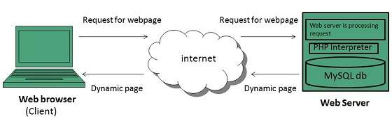

WEB PROGRAMMIN
Client-Server Model
The Client-server model is a distributed application structure that partitions task or workload between the providers of a resource or service, called servers, and service requesters called clients. In the client-server architecture, when the client computer sends a request for data to the server through the internet, the server accepts the requested process and deliver the data packets requested back to the client. Clients do not share any of their resources. Examples of Client-Server Model are Email, World Wide Web, etc.
How the Client-Server Model works ?
In this article we are going to take a dive into the Client-Server model and have a look at how the Internet works via, web browsers. This article will help us in having a solid foundation of the WEB and help in working with WEB technologies with ease.
Client: When we talk the word Client, it mean to talk of a person or an organization using a particular service. Similarly in the digital world a Client is a computer (Host) i.e. capable of receiving information or using a particular service from the service providers (Servers).
Servers: Similarly, when we talk the word Servers, It mean a person or medium that serves something. Similarly in this digital world a Server is a remote computer which provides information (data) or access to particular services.

So, its basically the Client requesting something and the Server serving it as long as its present in the database.
How the browser interacts with the servers ?
There are few steps to follow to interacts with the servers a client.
User enters the URL(Uniform Resource Locator) of the website or file. The Browser then requests the DNS(DOMAIN NAME SYSTEM) Server.
DNS Server lookup for the address of the WEB Server.
DNS Server responds with the IP address of the WEB Server.
Browser sends over an HTTP/HTTPS request to WEB Server’s IP (provided by DNS server).
Server sends over the necessary files of the website.
Browser then renders the files and the website is displayed. This rendering is done with the help of DOM (Document Object Model) interpreter, CSS interpreter and JS Engine collectively known as the JIT or (Just in Time) Compilers.

Advantages of Client-Server model:
Centralized system with all data in a single place.
Cost efficient requires less maintenance cost and Data recovery is possible.
The capacity of the Client and Servers can be changed separately.
Disadvantages of Client-Server model:
Clients are prone to viruses, Trojans and worms if present in the Server or uploaded into the Server.
Server are prone to Denial of Service (DOS) attacks.
Data packets may be spoofed or modified during transmission.
Phishing or capturing login credentials or other useful information of the user are common and MITM(Man in the Middle) attacks are common.
Understanding Types of Web Applications Architecture and Components

Talking in terms of computing, a web applications architecture or web components can be termed as a client-server computer program where the client, including the user interface and client-side logic, runs in a web browser. Some of the most common types of web applications are webmail, online retail sales, online banking, and online auctions among many others.
One cannot clearly differentiate between a dynamic web page of any kind and a “web application”. Those websites which are referred to as “web applications” are the ones that have similar functionality to a desktop software application, or to a mobile app.
With HTML5, came the explicit language support which makes applications that are loaded as web pages, but can also store data locally and still keep on functioning while offline.
Types of Web Applications Architecture
In simple terms, a web application architecture or a type of web application is a pattern of interaction between various web application components that we discussed above. The “type” of web application architecture is directly proportional to how the application logic is distributed among the client and server sides.
Three primary types of website application architecture are:

Serverless Architecture — A serverless architecture is a simple way to build and run applications and services without having to manage infrastructure. The application you deploy runs on servers, but all the server management is done by a third-party service provider like AWS. You don’t need to provision, scale, and maintain servers in order to run your applications, databases, and storage systems.
Single-Page Applications —A single-page application or SPA is a type of web application architecture that interacts with the user by dynamically rewriting the current page rather than loading entire new pages from a server. In this way, one can avoid interruption of the user experience between successive pages which makes the application behave more like a desktop application.
All the vital code of HTML, JavaScript, and CSS is retrieved with a single page load, or the appropriate resources are dynamically loaded and added to the page as necessary.
.
Types of Web Content
web page is a document available on world wide web. Web Pages are stored on web server and can be viewed using a web browser.
A web page can cotain huge information including text, graphics, audio, video and hyper links. These hyper links are the link to other web pages.
Collection of linked web pages on a web server is known as website. There is unique Uniform Resource Locator (URL) is associated with each web page.
Static Web page
Static web pages are also known as flat or stationary web page. They are loaded on the client’s browser as exactly they are stored on the web server. Such web pages contain only static information. User can only read the information but can’t do any modification or interact with the information.
Static web pages are created using only HTML. Static web pages are only used when the information is no more required to be modified.

Dynamic Web page
Dynamic web page shows different information at different point of time. It is possible to change a portaion of a web page without loading the entire web page. It has been made possible using Ajax technology.
Server-side dynamic web page
It is created by using server-side scripting. There are server-side scripting parameters that determine how to assemble a new web page which also include setting up of more client-side processing.
Client-side dynamic web page
It is processed using client side scripting such as JavaScript. And then passed in to Document Object Model (DOM).
Overview of HTTP -HTTP request –response
The Hypertext Transfer Protocol (HTTP) is an application-level protocol for distributed, collaborative, hypermedia information systems. This is the foundation for data communication for the World Wide Web (i.e. internet) since 1990. HTTP is a generic and stateless protocol which can be used for other purposes as well using extensions of its request methods, error codes, and headers.
Basically, HTTP is a TCP/IP based communication protocol, that is used to deliver data (HTML files, image files, query results, etc.) on the World Wide Web. The default port is TCP 80, but other ports can be used as well. It provides a standardized way for computers to communicate with each other. HTTP specification specifies how clients' request data will be constructed and sent to the server, and how the servers respond to these requests.
Basic Features
There are three basic features that make HTTP a simple but powerful protocol:
HTTP is connectionless: The HTTP client, i.e., a browser initiates an HTTP request and after a request is made, the client waits for the response. The server processes the request and sends a response back after which client disconnect the connection. So client and server knows about each other during current request and response only. Further requests are made on new connection like client and server are new to each other.
HTTP is media independent: It means, any type of data can be sent by HTTP as long as both the client and the server know how to handle the data content. It is required for the client as well as the server to specify the content type using appropriate MIME-type.
HTTP is stateless: As mentioned above, HTTP is connectionless and it is a direct result of HTTP being a stateless protocol. The server and client are aware of each other only during a current request. Afterwards, both of them forget about each other. Due to this nature of the protocol, neither the client nor the browser can retain information between different requests across the web pages.
HTTP/1.0 uses a new connection for each request/response exchange, where as HTTP/1.1 connection may be used for one or more request/response exchanges.
Basic Architecture
 The following diagram shows a very basic architecture of a web application and depicts where HTTP sits:
The following diagram shows a very basic architecture of a web application and depicts where HTTP sits:
The HTTP protocol is a request/response protocol based on the client/server based architecture where web browsers, robots and search engines, etc. act like HTTP clients, and the Web server acts as a server.
Client
The HTTP client sends a request to the server in the form of a request method, URI, and protocol version, followed by a MIME-like message containing request modifiers, client information, and possible body content over a TCP/IP connection.
Server
The HTTP server responds with a status line, including the message's protocol version and a success or error code, followed by a MIME-like message containing server information, entity meta information, and possible entity-body content.
Generation of dynamic web pages
 A server-side dynamic web page is a web page whose construction is controlled by an application server processing server-side scripts. In server-side scripting, parameters determine how the assembly of every new web page proceeds, including the setting up of more client-side processing.
A server-side dynamic web page is a web page whose construction is controlled by an application server processing server-side scripts. In server-side scripting, parameters determine how the assembly of every new web page proceeds, including the setting up of more client-side processing.
A client-side dynamic web page processes the web page using HTML scripting running in the browser as it loads. JavaScript and other scripting languages determine the way the HTML in the received page is parsed into the Document Object Model, or DOM, that represents the loaded web page. The same client-side techniques can then dynamically update or change the DOM in the same way. Even though a web page can be dynamic on the client-side, it can still be hosted on a static hosting service such as GitHub Pages or Amazon S3 as long as there isn’t any server-side code included.
A dynamic web page is then reloaded by the user or by a computer program to change some variable content. The updating information could come from the server, or from changes made to that page’s DOM. This may or may not truncate the browsing history or create a saved version to go back to, but a dynamic web page update using AJAX technologies will neither create a page to go back to, nor truncate the web browsing history forward of the displayed page. Using AJAX, the end user gets one dynamic page managed as a single page in the web browser while the actual web content rendered on that page can vary. The AJAX engine sits only on the browser requesting parts of its DOM, the DOM, for its client, from an application server.
DHTML is the umbrella term for technologies and methods used to create web pages that are not static web pages, though it has fallen out of common use since the popularization of AJAX, a term which is now itself rarely used. Client-side-scripting, server-side scripting, or a combination of these make for the dynamic web experience in a browser.
Classical hypertext navigation, with HTML or XHTML alone, provides “static” content, meaning that the user requests a web page and simply views the page and the information on that page.
However, a web page can also provide a “live”, “dynamic”, or “interactive” user experience. Content (text, images, form fields, etc.) on a web page can change, in response to different contexts or conditions.
There are two ways to create this kind of effect:
Using client-side scripting to change interface behaviors within a specific web page, in response to mouse or keyboard actions or at specified timing events. In this case the dynamic behavior occurs within the presentation.
Using server-side scripting to change the supplied page source between pages, adjusting the sequence or reload of the web pages or web content supplied to the browser. Server responses may be determined by such conditions as data in a posted HTML form, parameters in the URL, the type of browser being used, the passage of time, or a database or server state.
Web pages that use client-side scripting must use presentation technology broadly called rich interfaced pages. Client-side scripting languages like JavaScript or ActionScript, used for Dynamic HTML (DHTML) and Flash technologies respectively, are frequently used to orchestrate media types (sound, animations, changing text, etc.) of the presentation. The scripting also allows use of remote scripting, a technique by which the DHTML page requests additional information from a server, using a hidden Frame, XMLHttpRequests, or a web service.
Web pages that use server-side scripting are often created with the help of server-side languages such as PHP, Perl, ASP, ASP.NET, JSP, ColdFusion and other languages. These server-side languages typically use the Common Gateway Interface (CGI) to produce dynamic web pages. These kinds of pages can also use, on the client-side, the first kind (DHTML, etc.).
A program running on a web server (server-side scripting) is used to generate the web content on various web pages, manage user sessions, and control workflow. Server responses may be determined by such conditions as data in a posted HTML form, parameters in the URL, the type of browser being used, the passage of time, or a database or server state.
Such web pages are often created with the help of server-side languages such as ASP, ColdFusion, Go, JavaScript, Perl, PHP, Ruby, Python, WebDNA and other languages, by a support server that can run on the same hardware as the web server. These server-side languages often use the Common Gateway Interface (CGI) to produce dynamic web pages. Two notable exceptions are ASP.NET, and JSP, which reuse CGI concepts in their APIs but actually dispatch all web requests into a shared virtual machine.
The server-side languages are used to embed tags or markers within the source file of the web page on the web server. When a user on a client computer requests that web page, the web server interprets these tags or markers to perform actions on the server. For example, the server may be instructed to insert information from a database or information such as the current date.
Dynamic web pages are often cached when there are few or no changes expected and the page is anticipated to receive considerable amount of web traffic that would create slow load times for the server if it had to generate the pages on the fly for each request.
Client-side scripting is changing interface behaviors within a specific web page in response to mouse or keyboard actions, or at specified timing events. In this case, the dynamic behavior occurs within the presentation. The client-side content is generated on the user’s local computer system.